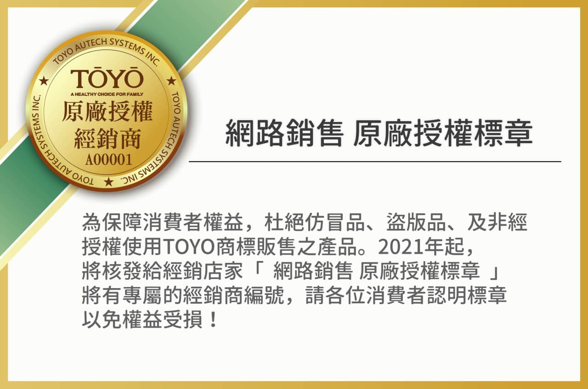

2021-01-01
TOYO 網路銷售【原廠授權標章】
近期接獲消費者反應，有業者未經本公司同意以本公司名義販售商品，因其非本公司之合法經銷商，並無商標權、著作權之授權，且品質成份及原物料來源亦不明，已嚴重影響消費者及本公司之權益；特此鄭重聲明除本公司及持有合法經銷授權之經銷商外，並未與任何不明業者合作，其網路平台和其販售相關行為概與本公司無關。
故提醒消費者務必謹慎，除了本公司
● 直營網站、電商平台
● 經銷授權之經銷商網站、實體店鋪
其他管道請認明合法經銷授權標章(如上方圓形標章圖示)，以免受騙上當。若有侵害本公司權利之製造、持有、陳列、販賣等行為，本公司依法追訴其責任，特此公告！
Q: 網路賣場這麼多，我該如何知道購買的是正版授權濾心呢?
A:
1. 確認該網路賣場是否有TOYO網路授權認證標章。
2. 可前往官方網站，參考網站 店鋪一覽，詢問您鄰近地區TOYO原廠授權之經銷商。
3. 可於官方LINE客服詢問您於網路找到的賣場，是否為原廠授權，將由專人為您確認。
A:
1. 確認該網路賣場是否有TOYO網路授權認證標章。
2. 可前往官方網站，參考網站 店鋪一覽，詢問您鄰近地區TOYO原廠授權之經銷商。
3. 可於官方LINE客服詢問您於網路找到的賣場，是否為原廠授權，將由專人為您確認。